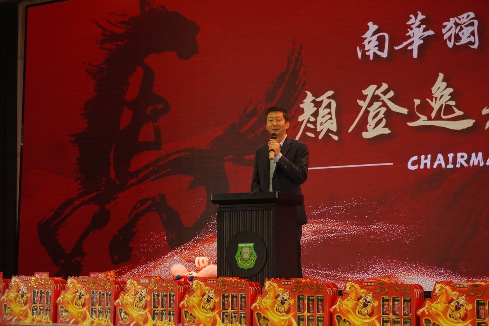
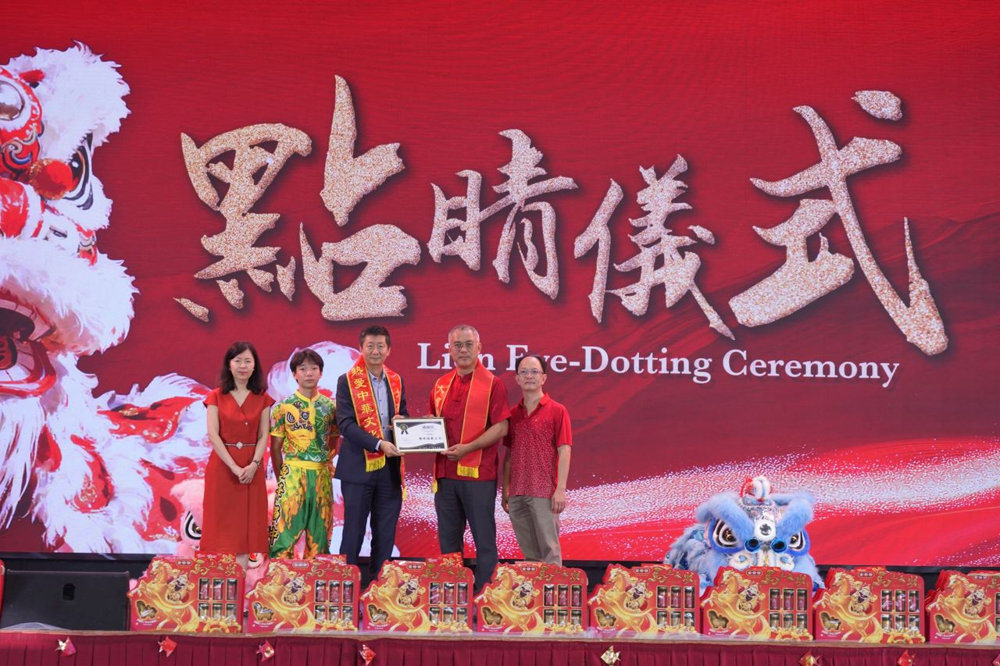
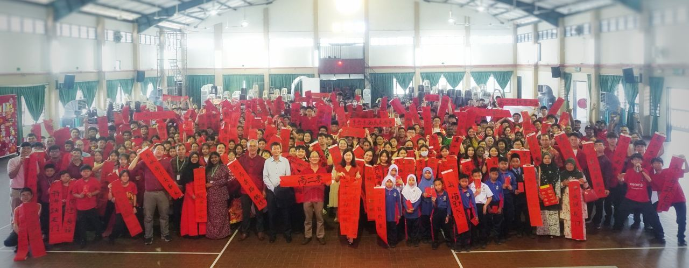
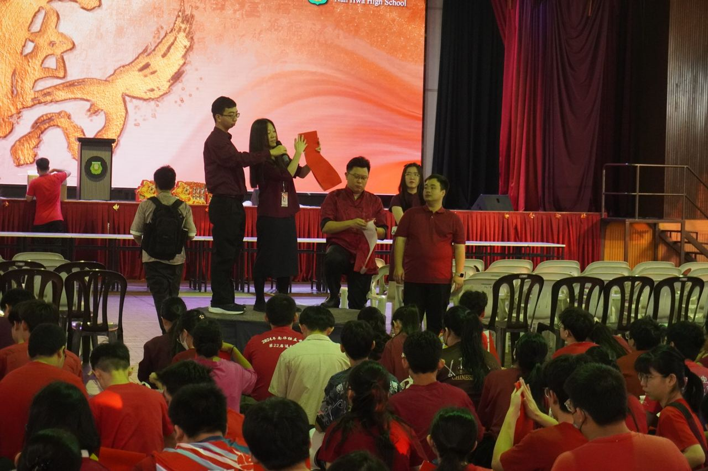
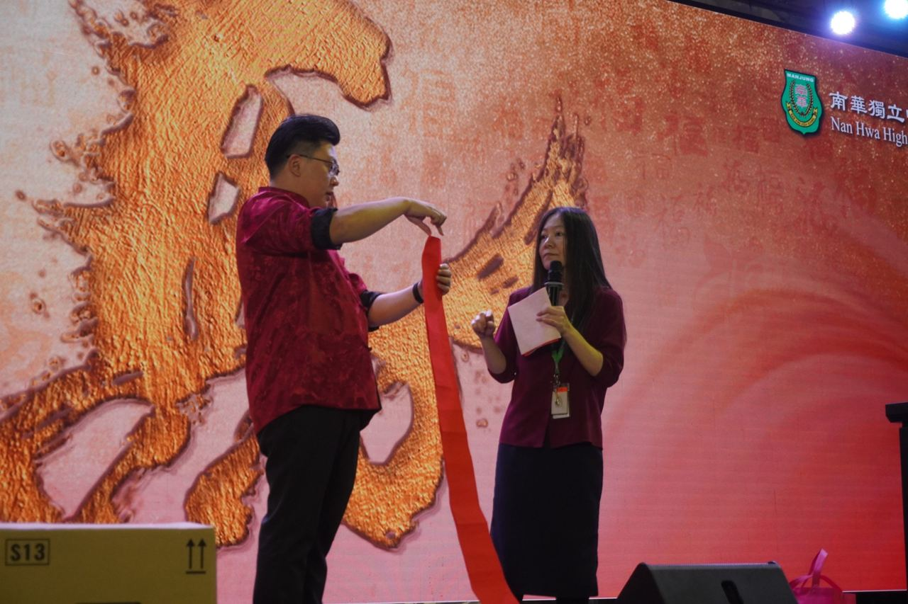
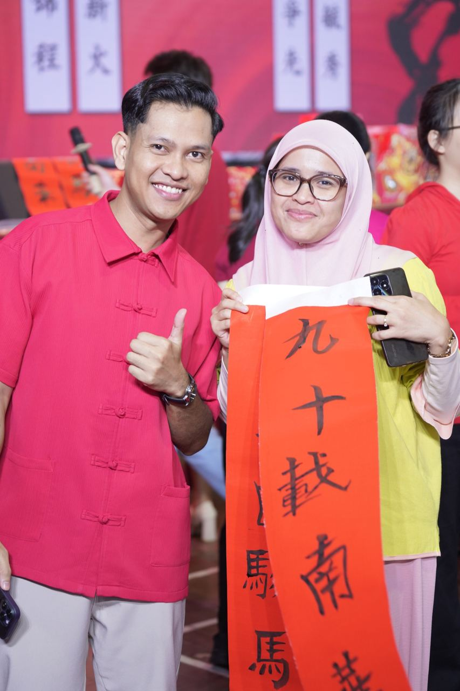
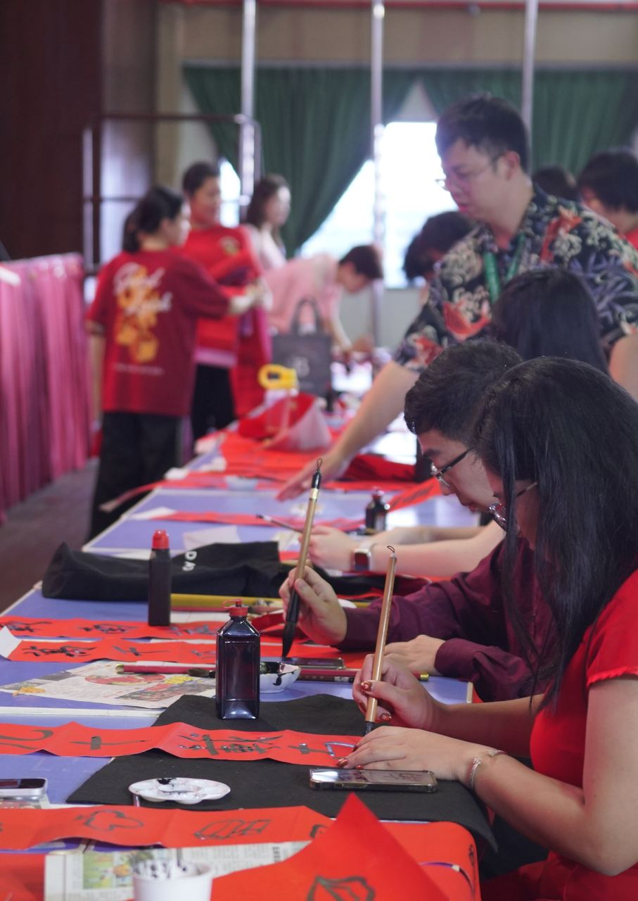
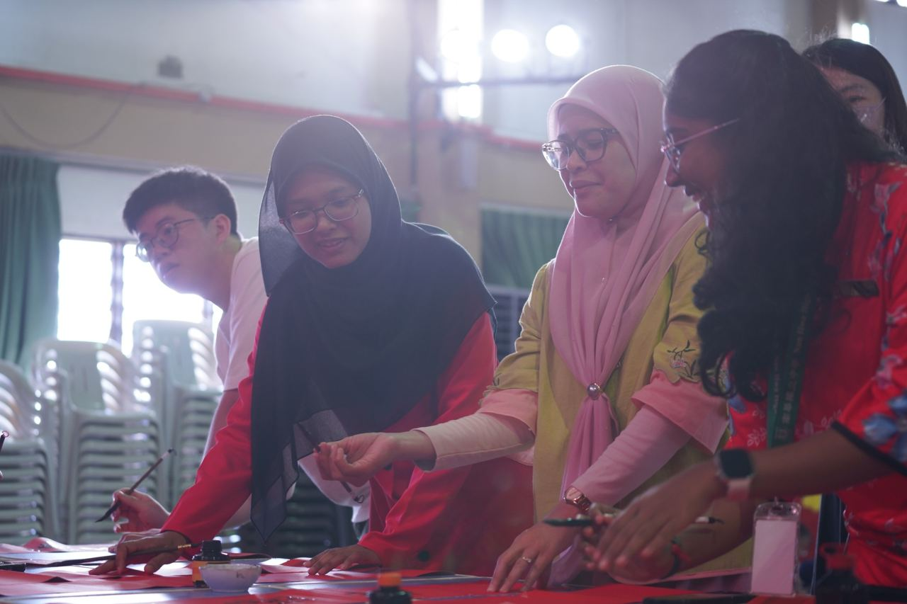

南华独中“万马迎福”红海一片
南华独中“万马迎福”红海一片
友族师生共庆展现多元和谐
颜董事长展望AI新局，陈校长感性回顾教改路
本校于近日盛大举办“万马迎福”新春系列活动。校园内张灯结彩，全校董家教生皆身着此充满喜庆的红色新衣亮相，寓意鸿运当头。现场不仅有传统的挥春、瑞狮点睛及大团拜，更邀请了友族学校SK Sungai Wangi的师生共襄盛举，在这座拥有九十年历史的校园中，谱写了一曲跨越种族的文化交响乐。
活动当天，校园化身为红色的海洋。在董事长颜登逸先生、董事总务何添胜先生、董事副总务林道祥先生以及校长陈丽冰博士的带领下，全校师生齐聚礼堂进行大团拜。活动高潮迭起，从庄严的醒狮点睛仪式，到墨香四溢的挥春比赛，再到热闹非凡的班级采青，加之昨晚宿舍自治委员会举办的新春晚宴，浓厚的年味弥漫在各个角落。
值得一提的是，曾与南华独中在文艺大汇演上同台献艺的SK Sungai Wangi国小师生，此次受邀亲临现场。友族同胞在南华师生的陪同下，近距离观赏挥春与狮舞，并接受董事长颜登逸分发的年柑与陈校长的红包，这一幕不仅是节日的庆祝，更是南华独中践行“走出校园，拥抱多元”教育理念的最佳注脚。
董事长颜登逸在致辞中，借“春季更新”之意，发表了对学校未来的宏观展望。他指出，丙午马年象征着奔腾与力量，正如南华即将迎来的教育新局。
他强调，面对人工智能（AI）时代的来临，南华的教育必须与时俱进。学校将致力于推动“人机协作”的教学模式，不仅不恐惧AI，更要驾驭AI。他期许南华学子能如骏马般，在科技浪潮中不仅具备人文底蕴，更拥有运用前沿科技解决问题的能力，为南华的下一个九十年奠定坚实基础。
相较于董事长的未来展望，校长陈丽冰博士的致辞则充满了温情的回顾与省思，以“马”象征“不轻言放弃的坚持”，感谢全体教职员在过去一年教改路上的辛勤付出。
“不是每一朵花都要开成同一种形状。”
陈校长动情地表示，南华推行教改2.0，旨在尊重个体差异。她特别感谢家长与华社在“寒冬与暗夜”中对学校的信任，并勉励学子在九十周年之际，既要饮水思源，也要勇敢寻找属于自己的位置，尤其强调67位新生加入南华即是一份沉甸甸的信任，学校将不负所托，继续守护每一位孩子的成长。
由联课处主办的新春大团拜系列活动为丙午马农历新年掀开春意浓浓的序曲，前一晚由宿舍自治委员会的新春晚宴则是温馨感人，曼绒县华小校长以及寄宿生家长也受邀出席，董家教员生共聚一堂欢庆马年新春。
晚宴表演内容包括有全体宿舍生精心策划的派柑舞与两首新生与学哥姐联合献舞，与此同时本校华乐团、管乐团、二十四节令鼓、龙狮团、舞蹈团以及扯铃队同台表演，晚宴现场激情洋溢，欢乐满堂。







